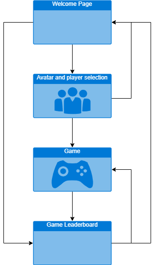
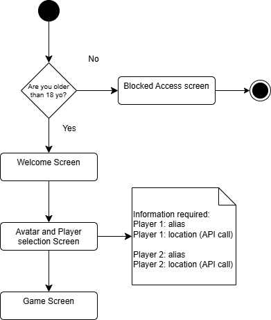

Game's Website Flow and Interaction
By Micha Meichtry the 29/03/2025 at 16:30
Game Flow
The website guides you through a series of engaging pages: a warm welcome that introduces the game, a selection screen for your avatar and personal details, the main gameplay area, and a leaderboard to track your progress. The visual below shows how these sections connect.
Game Process
Before starting, players are asked to verify they are 18 or older due to mature content. This step ensures a responsible gaming environment, while smooth transitions and loading screens provide a seamless experience throughout the site.
Gameplay Process
In the game, you'll face increasingly tough challenges. With each phase, expect stronger enemies and helpful health kits at key intervals. Your mission is to outlast every challenge and see how long you can survive.
Game Sequence
At the end of your session, your score is recorded and displayed on the leaderboard, letting you compare your performance with others. Every playthrough is a fresh challenge in this unpredictable, post-apocalyptic world.